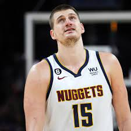

Nikola Jokić (Sombor, 19. februar 1995) srpski je košarkaš. Igra na poziciji centra, a trenutno nastupa za Denver nagetse. Prvi je Srbin koji je proglašen za najkorisnijeg igrača NBA lige. Nagradu za najboljeg košarkaša najjače košarkaške lige na svetu osvojio je dva puta i to u sezonama 2020/21. i 2021/22. Tri sezone je nastupao za Mega Leks i proglašen je za najkorisnijeg igrača Jadranske lige. Izabran je u drugom krugu NBA drafta 2014. kao 41. po redu od strane Denver nagetsa sa kojima je u julu 2015. potpisao ugovor. Košarkaški savez Srbije dodelio je Jokiću nagradu za najboljeg srpskog košarkaša u 2018. godini. Godine 2019. izabran je prvi put da igra na Ol-star utakmici. Kao lider franšize, izborio je doigravanje u sezoni 2018/19 i posle deset godina Denver je prošao prvo kolo doigravanja. Tri puta je izabran u najbolju petorku NBA lige: 2019, 2021. i 2022. godine. Jokić je ostvario najbrži tripl-dabl u istoriji NBA lige za samo 14 minuta i 33 sekunde provedenih na terenu. Ujedno je postao evropski košarkaš sa najvećim brojem tripl-dabl mečeva i ušao među 10 najboljih igrača po ovom parametru u istoriji NBA lige. Sa reprezentacijom Srbije je osvojio srebrnu medalju na Olimpijskim igrama u Riju 2016. godine.
